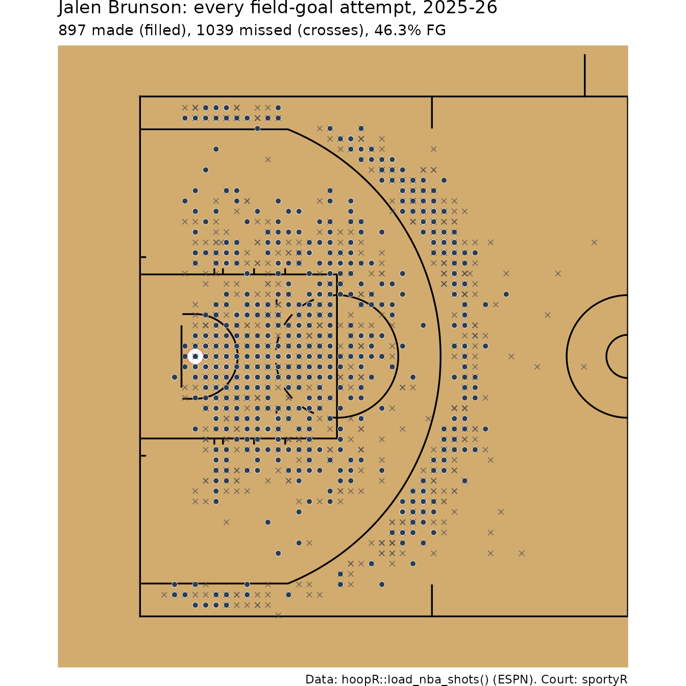
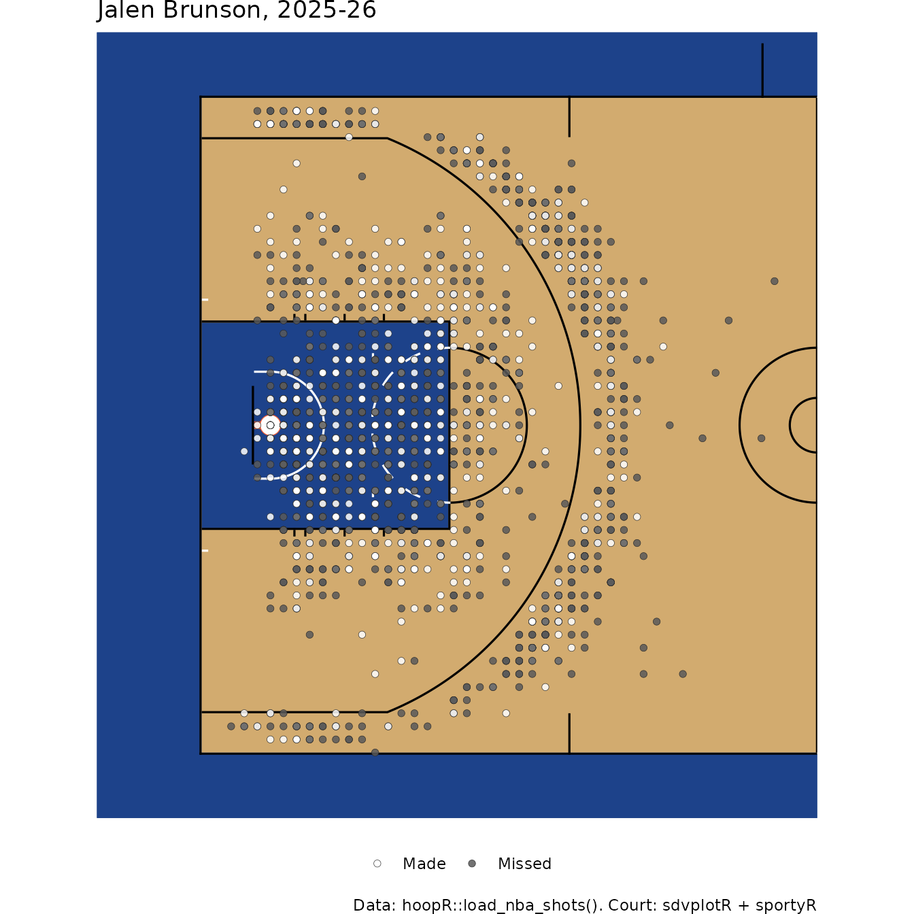
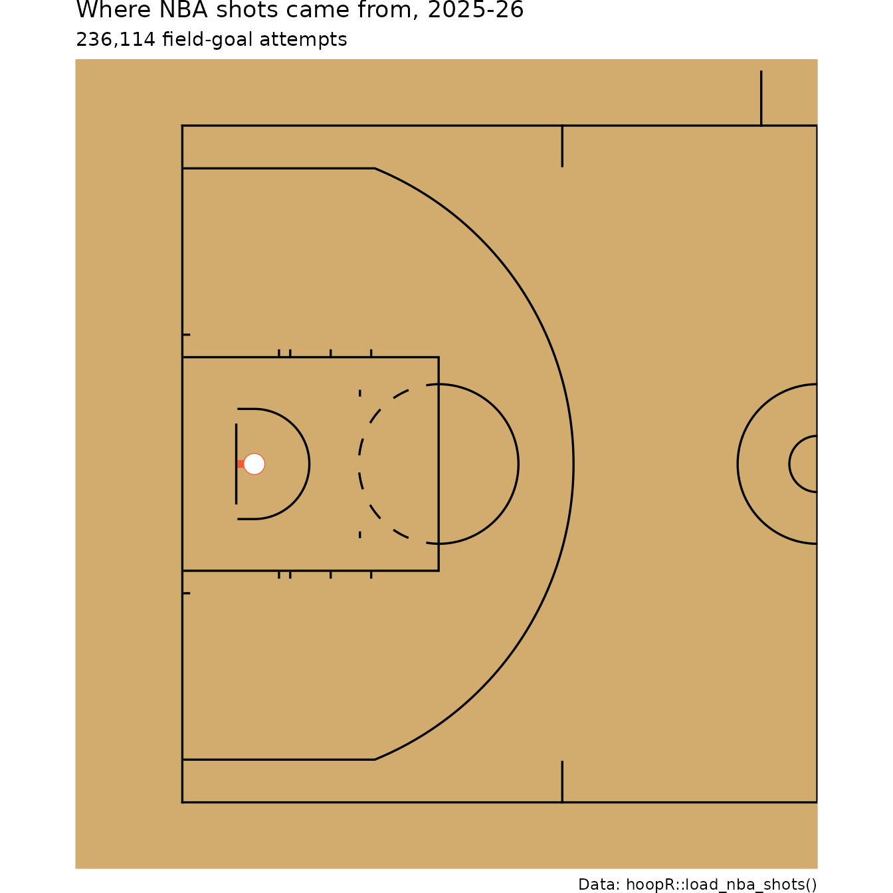
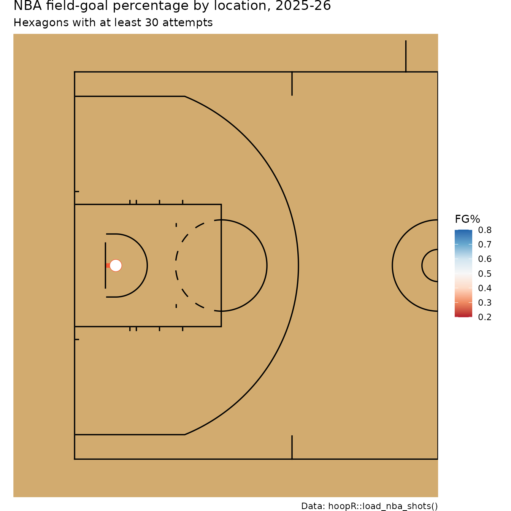
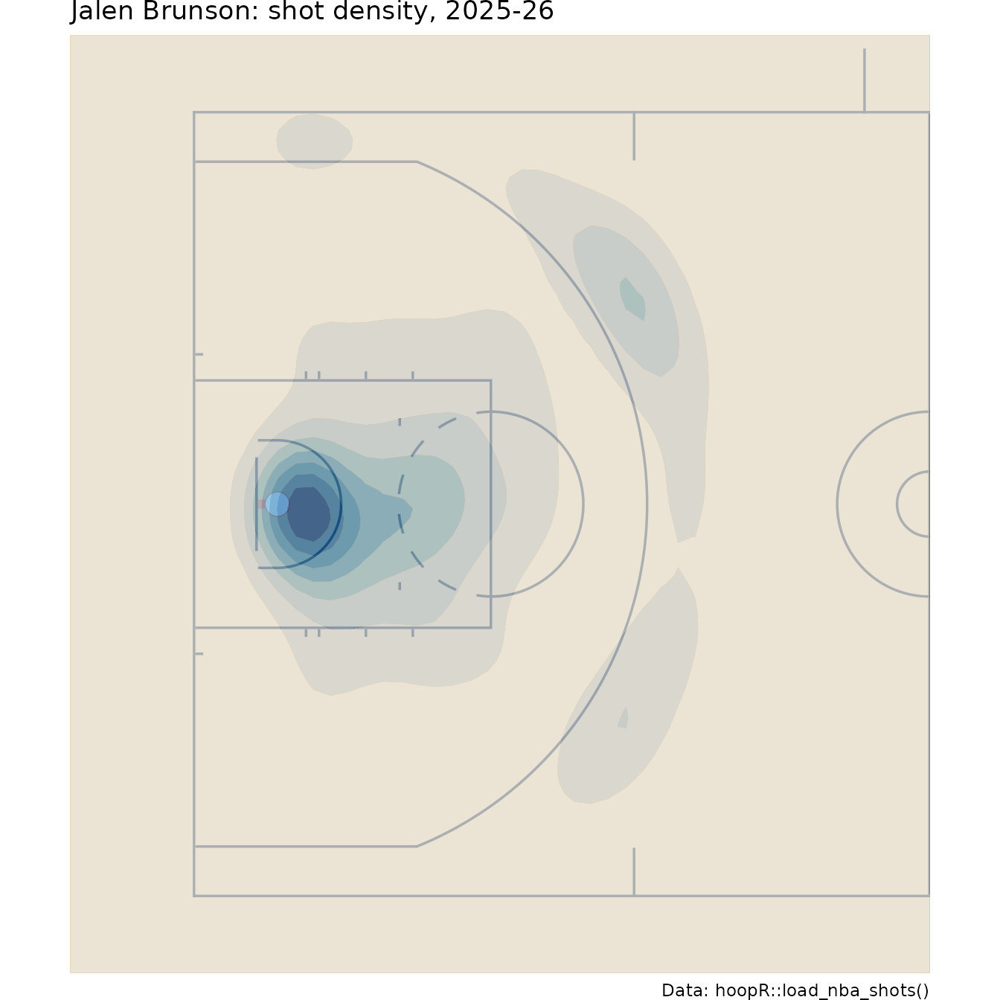
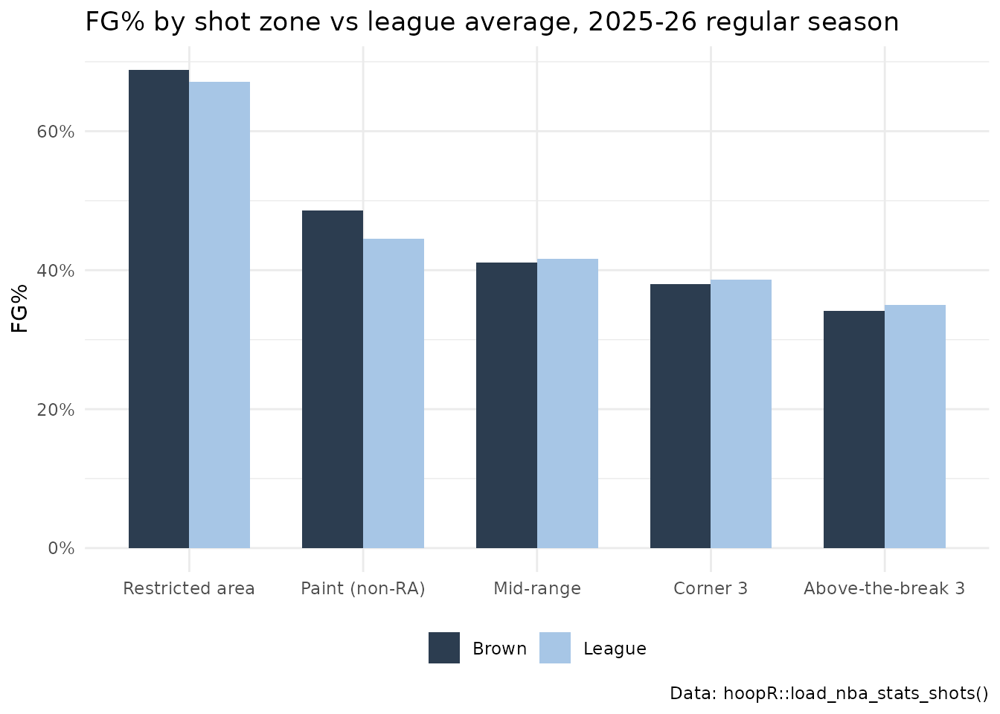
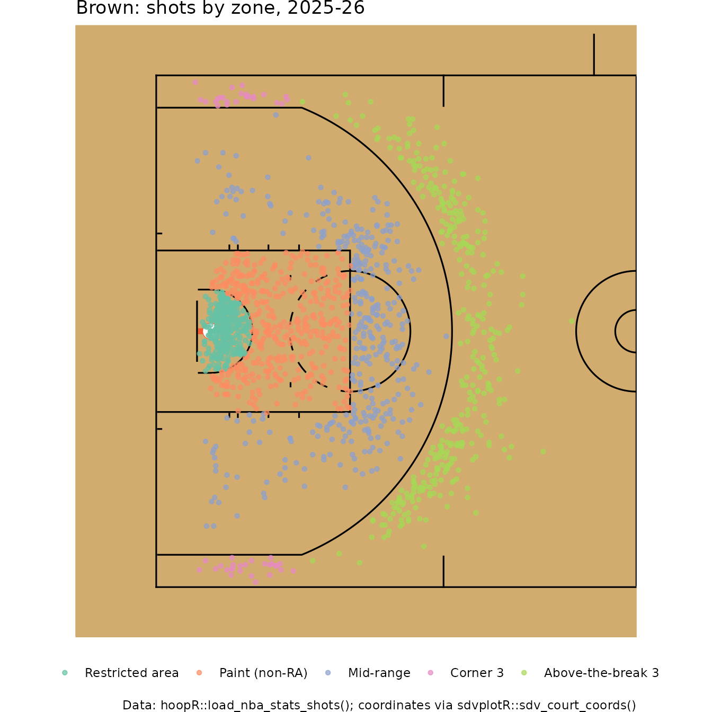
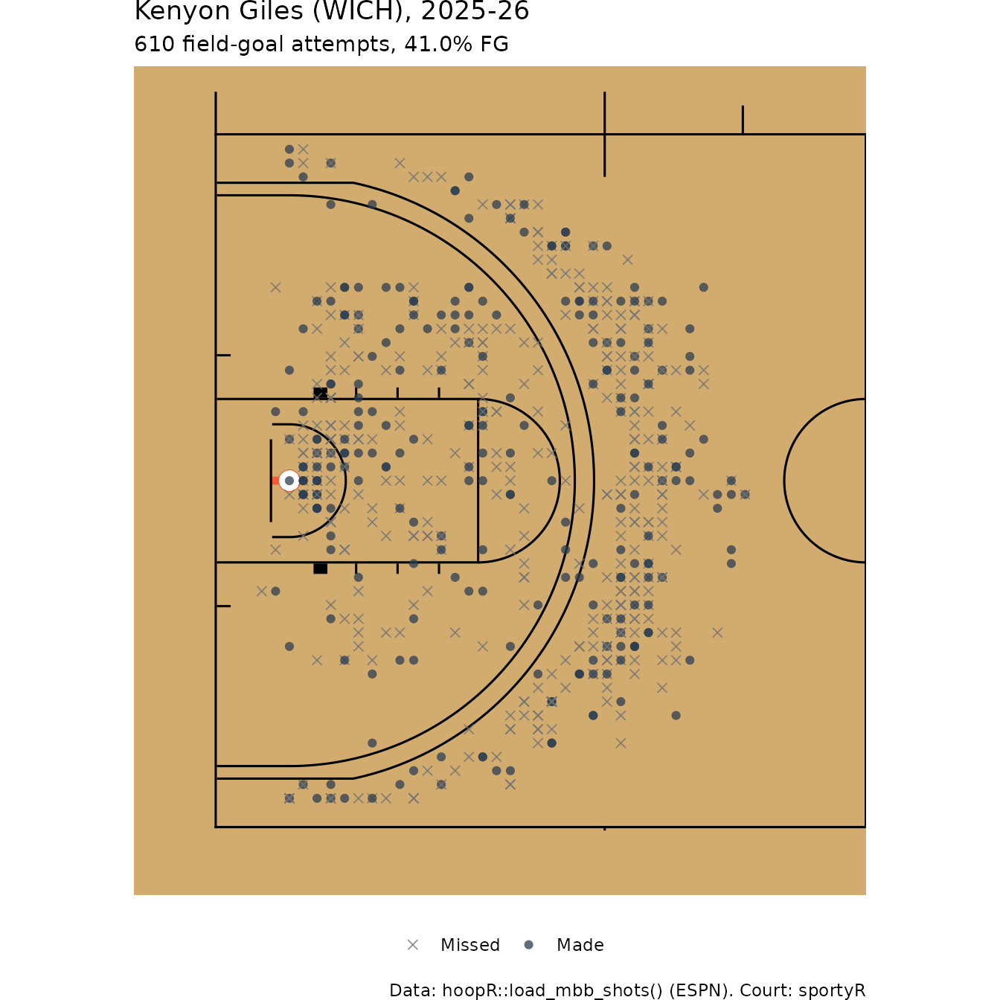

NBA and College Basketball Shot Charts in R with hoopR, sportyR and sdvplotR
Saiem Gilani
Source:vignettes/articles/nba-college-basketball-shot-charts.Rmd
nba-college-basketball-shot-charts.RmdA shot chart puts every field-goal attempt where it
happened. It is the most direct picture of how a player or team
scores, and with hoopR’s shot loaders and a court drawn by
sportyR it takes a
few lines of ggplot2. This article covers make/miss charts,
hexbin and density maps, shot zones and field-goal percentage (FG%) by
zone, for the NBA and men’s college basketball. Every chart is computed
from one season of release data, filtered to one player where possible
to keep it fast.
New to hoopR? Read Getting Started with hoopR
first.
Packages
library(hoopR)
library(dplyr)
library(ggplot2)
library(sportyR) # install.packages("sportyR")
season <- 2026 # the 2025-26 seasonsdvplotR is
optional. It adds sdv_court_coords(), which converts NBA
Stats shot locations to sportyR’s court frame, and
sdv_surface(), which paints a sportyR court in a team’s
colors:
pak::pak("sportsdataverse/sdvplotR")Which shot data does hoopR have, and in which coordinate frame?
Shot locations come in different frames, and mixing them up is the most common shot-chart bug.
| Loader | Source | Location columns | Frame |
|---|---|---|---|
load_nba_shots() |
ESPN NBA play-by-play |
coordinate_x, coordinate_y
|
Feet from center court; each team’s shots at the basket it attacks. Plot directly. |
load_mbb_shots() |
ESPN men’s college play-by-play |
coordinate_x, coordinate_y
|
Same as above. A few rows hold placeholder values far off the court. |
load_nba_stats_shots() |
NBA Stats API |
x_legacy, y_legacy
|
Tenths of a foot, origin at the hoop. Convert with
sdvplotR::sdv_court_coords(). |
load_ncaa_mbb_shots() |
stats.ncaa.org engine | see its reference page | NCAA shot events from the play-by-play engine. |
sportyR draws courts with the origin at center court, in feet:
x runs along the court from -47 to 47 and y
across it from -25 to 25. The left basket is at x = -41.75.
geom_basketball("nba", display_range = "defense") draws the
left half.
A make/miss chart for an NBA player
load_nba_shots() holds every shot ESPN charted. We drop
free throws, pick the player with the most field-goal attempts, and turn
shots at the right-hand basket half a turn (flip both signs) so every
shot lands at the left basket.
nba_shots <- load_nba_shots(seasons = season) |>
filter(!grepl("Free Throw", type_text))
volume <- nba_shots |>
count(athlete_id_1, athlete_name_1, team_abbrev, name = "fga", sort = TRUE) |>
slice_head(n = 1)
volume
#> # A tibble: 1 × 4
#> athlete_id_1 athlete_name_1 team_abbrev fga
#> <int> <chr> <chr> <int>
#> 1 3934672 Jalen Brunson NY 1927
player_shots <- nba_shots |>
filter(athlete_id_1 == volume$athlete_id_1) |>
mutate(
right = coordinate_x > 0,
x = if_else(right, -coordinate_x, coordinate_x),
y = if_else(right, -coordinate_y, coordinate_y),
result = if_else(scoring_play, "Made", "Missed")
)
geom_basketball("nba", display_range = "defense") +
geom_point(aes(x, y), data = filter(player_shots, result == "Missed"),
shape = 4, colour = "grey30", size = 1.3, alpha = 0.6) +
geom_point(aes(x, y), data = filter(player_shots, result == "Made"),
shape = 21, fill = "#2C3D50", colour = "white", stroke = 0.2, size = 1.8) +
labs(
title = paste0(volume$athlete_name_1, ": every field-goal attempt, 2025-26"),
subtitle = sprintf("%d made (filled), %d missed (crosses), %.1f%% FG",
sum(player_shots$scoring_play), sum(!player_shots$scoring_play),
100 * mean(player_shots$scoring_play)),
caption = "Data: hoopR::load_nba_shots() (ESPN). Court: sportyR"
)
The same chart on a team-colored court
sdvplotR::sdv_surface() wraps
geom_basketball() and paints the lane and apron in a team’s
colors. It needs sportyR 2.4.5 or later.
library(sdvplotR)
sdv_surface("nba", volume$team_abbrev, display_range = "defense") +
geom_point(aes(x, y, fill = result), data = player_shots,
shape = 21, colour = "grey15", stroke = 0.2, size = 1.7, alpha = 0.85) +
scale_fill_manual(values = c(Made = "white", Missed = "grey35"), name = NULL) +
labs(title = paste0(volume$athlete_name_1, ", 2025-26"),
caption = "Data: hoopR::load_nba_shots(). Court: sdvplotR + sportyR") +
theme(legend.position = "bottom")
Where do shots come from? Hexbin maps
With hundreds of overlapping points a scatter plot saturates. A
hexbin map counts attempts in small hexagons instead.
Here is the whole league, which needs the hexbin
package:
league_shots <- nba_shots |>
mutate(
right = coordinate_x > 0,
x = if_else(right, -coordinate_x, coordinate_x),
y = if_else(right, -coordinate_y, coordinate_y)
) |>
filter(x <= 0)
geom_basketball("nba", display_range = "defense") +
geom_hex(aes(x, y), data = league_shots, binwidth = c(1.5, 1.5), alpha = 0.85) +
scale_fill_viridis_c(trans = "log10", name = "Attempts") +
labs(title = "Where NBA shots came from, 2025-26",
subtitle = sprintf("%s field-goal attempts", format(nrow(league_shots), big.mark = ",")),
caption = "Data: hoopR::load_nba_shots()")
The two clusters, at the rim and just beyond the three-point line,
are the modern shot profile: the mid-range is comparatively empty.
Coloring each hexagon by its make rate instead of its count shows
efficiency by location (stat_summary_hex()
averages z in each bin):
geom_basketball("nba", display_range = "defense") +
stat_summary_hex(
aes(x, y, z = as.numeric(scoring_play)), data = league_shots,
fun = \(z) if (length(z) >= 30) mean(z) else NA_real_,
binwidth = c(2, 2), alpha = 0.9
) +
scale_fill_distiller(palette = "RdBu", direction = 1, limits = c(0.2, 0.8),
oob = scales::squish, name = "FG%", na.value = NA) +
labs(title = "NBA field-goal percentage by location, 2025-26",
subtitle = "Hexagons with at least 30 attempts",
caption = "Data: hoopR::load_nba_shots()")
Smooth density maps
A two-dimensional kernel density estimate smooths the same information into contours, which reads well for a single player:
geom_basketball("nba", display_range = "defense") +
stat_density_2d_filled(aes(x, y), data = player_shots, alpha = 0.7,
contour_var = "ndensity", bins = 8) +
scale_fill_brewer(palette = "Blues", guide = "none") +
labs(title = paste0(volume$athlete_name_1, ": shot density, 2025-26"),
caption = "Data: hoopR::load_nba_shots()")
Shot zones and FG% by zone
Zones turn a chart into a table. A standard five-zone split:
- Restricted area: within 4 feet of the basket.
- Paint (non-restricted area): the rest of the lane (16 feet wide in the NBA, 12 in college, 19 feet deep from the baseline).
- Mid-range: every other two-point attempt.
- Corner 3: three-pointers from the straight part of the line along the sideline.
- Above-the-break 3: every other three.
Zone boundaries need to know whether an attempt was a three. ESPN’s
NBA shot file records score_value = 0 for misses, so it
cannot tell a missed three from a missed two. The NBA Stats file can:
shot_value is the attempt’s value. We use
load_nba_stats_shots() (note it takes the season’s
start year) and convert its legacy coordinates with
sdv_court_coords(), which divides by ten and moves the
origin to center court so the shots fit
geom_basketball().
# Approximate zone geometry on sportyR's frame (basket at x = -41.75, feet).
shot_zone <- function(x, y, is_three, paint_half_width = 8, corner_depth = 14) {
dist <- sqrt((x + 41.75)^2 + y^2)
case_when(
is_three & x <= -47 + corner_depth & abs(y) >= 20 ~ "Corner 3",
is_three ~ "Above-the-break 3",
dist <= 4 ~ "Restricted area",
abs(y) <= paint_half_width & x <= -47 + 19 ~ "Paint (non-RA)",
TRUE ~ "Mid-range"
)
}
zone_levels <- c("Restricted area", "Paint (non-RA)", "Mid-range", "Corner 3", "Above-the-break 3")
stats_shots <- load_nba_stats_shots(seasons = season - 1) |>
as.data.frame() |>
sdvplotR::sdv_court_coords(x_column = "x_legacy", y_column = "y_legacy") |>
filter(season_type_id == 2) |> # regular season
mutate(
made = shot_result == "Made",
zone = factor(shot_zone(court_x, court_y, shot_value == 3), levels = zone_levels)
)
league_zones <- stats_shots |>
group_by(zone) |>
summarise(fga = n(), fg_pct = mean(made), pts_per_shot = mean(made * shot_value)) |>
mutate(share = fga / sum(fga))
league_zones |>
mutate(across(c(fg_pct, pts_per_shot, share), \(x) round(x, 3)))
#> # A tibble: 5 × 5
#> zone fga fg_pct pts_per_shot share
#> <fct> <int> <dbl> <dbl> <dbl>
#> 1 Restricted area 62278 0.671 1.34 0.284
#> 2 Paint (non-RA) 43714 0.446 0.891 0.199
#> 3 Mid-range 22197 0.416 0.833 0.101
#> 4 Corner 3 23577 0.387 1.16 0.108
#> 5 Above-the-break 3 67393 0.35 1.05 0.308Points per shot (FG% times the shot’s value) is the fair comparison across zones: a three only needs to go in two-thirds as often as a two to be worth the same.
Now one player against the league. We take the NBA Stats leader in
field-goal attempts (its player_name is a short name):
target <- stats_shots |>
count(person_id, player_name, sort = TRUE) |>
slice_head(n = 1)
target
#> person_id player_name n
#> 1 1627759 Brown 1543
player_zones <- stats_shots |>
filter(person_id == target$person_id) |>
group_by(zone) |>
summarise(fga = n(), fg_pct = mean(made)) |>
left_join(select(league_zones, zone, league_fg_pct = fg_pct), by = "zone") |>
mutate(diff = fg_pct - league_fg_pct)
player_zones |>
mutate(across(c(fg_pct, league_fg_pct, diff), \(x) round(x, 3)))
#> # A tibble: 5 × 5
#> zone fga fg_pct league_fg_pct diff
#> <fct> <int> <dbl> <dbl> <dbl>
#> 1 Restricted area 346 0.688 0.671 0.017
#> 2 Paint (non-RA) 426 0.486 0.446 0.04
#> 3 Mid-range 367 0.411 0.416 -0.005
#> 4 Corner 3 50 0.38 0.387 -0.007
#> 5 Above-the-break 3 354 0.342 0.35 -0.008
player_zones |>
tidyr::pivot_longer(c(fg_pct, league_fg_pct), names_to = "who", values_to = "pct") |>
mutate(who = if_else(who == "fg_pct", target$player_name, "League")) |>
ggplot(aes(zone, pct, fill = who)) +
geom_col(position = "dodge", width = 0.7) +
scale_y_continuous(labels = scales::percent) +
scale_fill_manual(values = c("#2C3D50", "#A7C6E6"), name = NULL) +
labs(title = "FG% by shot zone vs league average, 2025-26 regular season",
x = NULL, y = "FG%", caption = "Data: hoopR::load_nba_stats_shots()") +
theme_minimal() +
theme(legend.position = "bottom")
And the zones drawn on the court, to check the geometry:
geom_basketball("nba", display_range = "defense") +
geom_point(aes(court_x, court_y, colour = zone),
data = filter(stats_shots, person_id == target$person_id),
size = 1.2, alpha = 0.7) +
scale_colour_brewer(palette = "Set2", name = NULL) +
labs(title = paste0(target$player_name, ": shots by zone, 2025-26"),
caption = "Data: hoopR::load_nba_stats_shots(); coordinates via sdvplotR::sdv_court_coords()") +
theme(legend.position = "bottom")
A men’s college basketball shot chart
load_mbb_shots() uses the same ESPN frame as the NBA
file, and the college court has the same 94-foot floor and basket
position, so the code barely changes. Two differences: the college file
has a few placeholder coordinates far off the court, which we drop, and
its score_value is the attempt’s value (2 or 3) even for
misses, so zones work directly.
mbb_shots <- load_mbb_shots(seasons = season) |>
filter(!grepl("FreeThrow", type_text),
abs(coordinate_x) <= 47, abs(coordinate_y) <= 25) |>
mutate(
right = coordinate_x > 0,
x = if_else(right, -coordinate_x, coordinate_x),
y = if_else(right, -coordinate_y, coordinate_y),
made = scoring_play,
# college paint is 12 ft wide; the straight part of the arc is about 10 ft deep
zone = factor(shot_zone(x, y, score_value == 3, paint_half_width = 6, corner_depth = 10),
levels = zone_levels)
)
mbb_volume <- mbb_shots |>
count(athlete_id_1, athlete_name_1, team_abbrev, name = "fga", sort = TRUE) |>
slice_head(n = 1)
mbb_volume
#> # A tibble: 1 × 4
#> athlete_id_1 athlete_name_1 team_abbrev fga
#> <int> <chr> <chr> <int>
#> 1 5107508 Kenyon Giles WICH 610
mbb_player <- filter(mbb_shots, athlete_id_1 == mbb_volume$athlete_id_1)
geom_basketball("ncaa", display_range = "defense") +
geom_point(aes(x, y, shape = made, colour = made), data = mbb_player,
size = 1.8, alpha = 0.75) +
scale_shape_manual(values = c(`TRUE` = 16, `FALSE` = 4), labels = c("Missed", "Made"), name = NULL) +
scale_colour_manual(values = c(`TRUE` = "#2C3D50", `FALSE` = "grey45"), labels = c("Missed", "Made"), name = NULL) +
labs(title = paste0(mbb_volume$athlete_name_1, " (", mbb_volume$team_abbrev, "), 2025-26"),
subtitle = sprintf("%d field-goal attempts, %.1f%% FG", nrow(mbb_player), 100 * mean(mbb_player$made)),
caption = "Data: hoopR::load_mbb_shots() (ESPN). Court: sportyR") +
theme(legend.position = "bottom")
How does the college shot profile compare with the NBA’s?
mbb_zones <- mbb_shots |>
group_by(zone) |>
summarise(fga = n(), fg_pct = mean(made)) |>
mutate(share = fga / sum(fga))
bind_rows(
mutate(league_zones, league = "NBA"),
mutate(mbb_zones, league = "Men's college")
) |>
select(league, zone, share, fg_pct) |>
mutate(across(c(share, fg_pct), \(x) round(x, 3))) |>
tidyr::pivot_wider(names_from = league, values_from = c(share, fg_pct))
#> # A tibble: 5 × 5
#> zone share_NBA `share_Men's college` fg_pct_NBA `fg_pct_Men's college`
#> <fct> <dbl> <dbl> <dbl> <dbl>
#> 1 Restricted … 0.284 0.253 0.671 0.649
#> 2 Paint (non-… 0.199 0.243 0.446 0.452
#> 3 Mid-range 0.101 0.109 0.416 0.365
#> 4 Corner 3 0.108 0.074 0.387 0.36
#> 5 Above-the-b… 0.308 0.322 0.35 0.333Caveats
- Coordinates are charted by people. ESPN and NBA Stats locations are recorded in-arena or from video and can be off by a foot or two; heaves and tip-ins near the rim are noisy.
-
Zone boundaries here are approximate. The geometry
above uses round numbers; the official three-point line has a slightly
different corner depth, and shots on a line can land in either zone. Use
the NBA Stats
shot_value(or collegescore_value) for whether a shot was a three, never distance alone. - Small samples. FG% in a zone with a few dozen attempts is noisy. Filter hexagons and zones by attempt counts, as above.
-
Frames. Never pass ESPN
coordinate_x/coordinate_ytosdv_court_coords(); it is for the NBA Stats legacy frame (and EuroLeague’s, withprovider = "euroleague").
Where to go next
- The advanced metrics article turns shooting into eFG% and true shooting.
- sdvplotR’s own shot chart cookbook has more court styles, plus NBA and men’s college visualization guides.
- International shot data: EuroLeague’s
euroleague_game_points()and many league*_shots()functions, covered in the international leagues guide. - Reference pages:
load_nba_shots(),load_mbb_shots(),load_nba_stats_shots()andload_ncaa_mbb_shots()in the hoopR Data section.